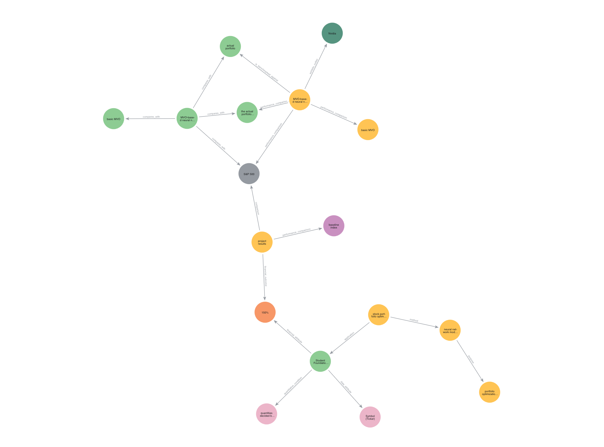
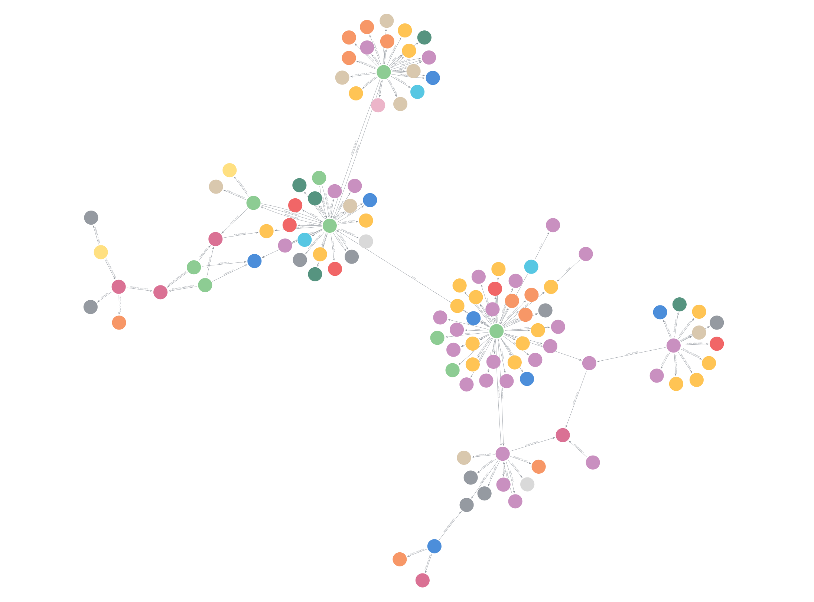
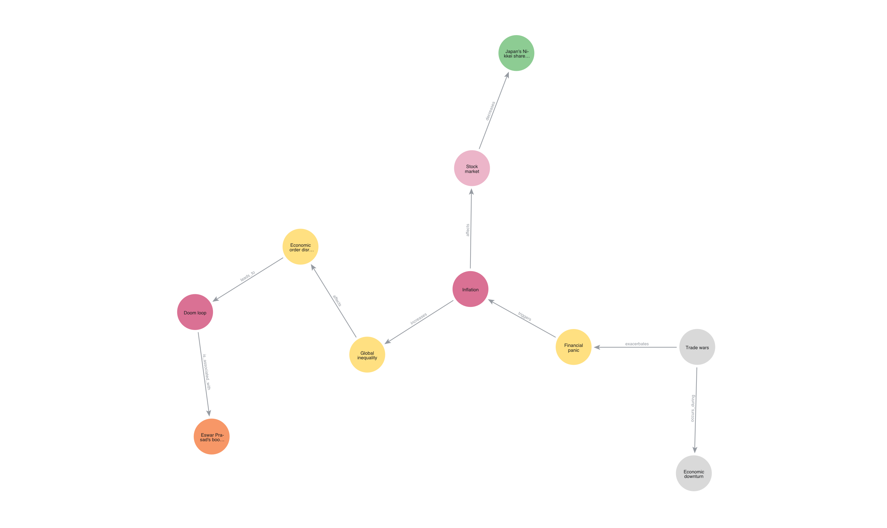
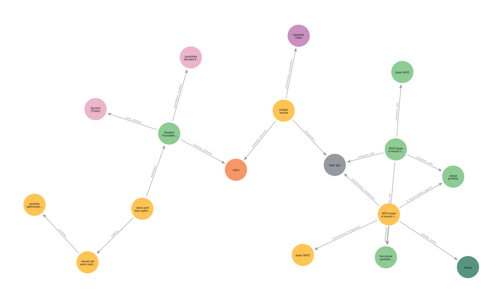

Results
Market Foundry was evaluated across two independent experiments: the dual-model ensemble classifier and the YAML dynamic schema generation pipeline. Each is reported separately below.
Ensemble Classifier Performance
Our dual-model ensemble classifier was evaluated on a curated corpus of 71 labeled financial documents spanning earnings call transcripts, SEC filings, research papers, press releases, and news articles, covering publications from 2008 to 2025, ranging from 2 to 290 pages. The system achieved 78.9% overall classification accuracy.
A Macro F1 of 0.802 reflects strong average performance across all five document classes weighted equally, meaning gains on high-frequency classes like SEC filings do not mask weaker recall on underrepresented ones like press releases.
Classifier Performance by Document Type
| Document Type | Precision | Recall | F1 Score | Support |
|---|---|---|---|---|
| Earnings Call | 0.923 | 0.923 | 0.923 | 13 |
| Research Paper | 0.875 | 1.000 | 0.933 | 7 |
| SEC Filing | 1.000 | 0.947 | 0.973 | 19 |
| News Article | 0.500 | 0.917 | 0.647 | 12 |
| Press Release | 0.800 | 0.400 | 0.533 | 20 |
⚠️ Press release recall (40%) is a known limitation: press releases are drafted to mimic journalistic style, causing their embeddings to overlap with news articles in vector space. Future versions will add keyword-based override rules (e.g., wire service datelines) to resolve this.
Why a Dual-Model Approach
TF-IDF logistic regression excels at detecting document-type-specific vocabulary patterns, such as the dense regulatory language of SEC filings or the Q&A structure of earnings calls. However, it is sensitive to surface-level noise: scanned PDFs often carry OCR artifacts, inconsistent spacing, and garbled characters that distort term frequency signals. The k-nearest neighbors model, built over sentence-level semantic embeddings, is more robust to this noise because it encodes meaning rather than exact tokens. Rather than directly comparing raw probabilities and cosine similarity scores (which are not on the same scale), their outputs are passed into a trained stacker that produces the final multiclass prediction. If the document remains ambiguous between a press release and a news article, a specialized binary reranker refines only that boundary using a small set of hand-engineered signals. This two-stage design isolates the hardest class pair without disrupting the general classifier.
Extraction Pipeline and Knowledge Graph
How Extraction is Guided
OneKE Extraction Prompt
Keeps the model focused on factual relationships directly stated in the source text.
- •Extracts concrete financial relationships only: results, ownership, products, partnerships, regulatory events
- •No inferred causation, sentiment, or analytical conclusions
- •Subjects and objects must be real-world entities: companies, metrics, products
- •Output enforced as strict JSON for direct graph ingestion
YAML Generator Prompt
Generates document-specific extraction plans from each document's topic map.
- •Defines entity types and relation types tailored to that document's content
- •Entity types must be stable real-world categories, no abstract concepts
- •Number of entity and relation types is capped to reduce fragmentation
- •Multiple plans generated per document for broad topical coverage
What We Built vs. What We Used
Original Work (Built by Our Team)
- Ensemble document classifier (TF-IDF logistic regression + KNN)
- Document-type-aware pipeline routing logic
- Dynamic topic extraction and multi-perspective YAML schema generation
- Engineering robustness layer: JSON validation, fallback schemas, edge-case handling
- Incremental result persistence and reproducibility tooling
Third-Party Tools (Integrated and Extended)
- OneKE, base schema-guided extraction framework (Luo et al., 2025)
- Qwen2.5-7B and Meta-Llama, open-source LLM inference
- Neo4j, graph database and storage layer
- SentenceTransformers, semantic embeddings for the k-NN classifier
- Modal, serverless GPU infrastructure for API hosting
Limitations
revenue_growth while another produces revenue_increase or revenue_acceleration for an identical fact. These are treated as separate edge types in the graph, so nodes that should be connected are not, reducing cross-document comparability and limiting the graph's ability to aggregate patterns without a normalization layer.
Q3 2024 revenue and Q3 revenue as separate nodes when they refer to the same fact.
Next Steps
Sample Outputs
See how MarketFoundry transforms real financial documents into structured knowledge graphs.
Private Equity Acquisition Data Room

Connections Extracted Across Documents:
- Revenue Concentration Risk → disclosed_in → Customer Contract Footnote (Doc 47)
- Pending Litigation → impacts_valuation_of → EBITDA Projection (Doc 12)
- Key-Man Clause → constrains → Post-Acquisition Integration Plan
PayPal Earnings Call

Extracted Triples:
- PayPal Holdings, Inc. → offers → agentic commerce services
- PayPal Holdings, Inc. → operates_product → Buy Now, Pay Later
- Buy Now, Pay Later → achieves → NPS of 80
Doom Loop News Article

Causal Relationships:
- Trade wars → exacerbates → Financial panic
- Financial panic → triggers → Inflation
- Inflation → increases → Global inequality
Stock Portfolio Optimization

Cross-Document Insights:
- Portfolio → optimizes_for → maximizing return on investment
- MVO-based Neural Network → achieves → dominating performance over other models
- Dataset → consists_of → daily information from Yahoo Finance
API Access
Developers can integrate the knowledge extraction pipeline directly through our Modal API. The endpoint accepts a document and automatically extracts knowledge graph triples and stores them in a Neo4j database. Click the link below to view the API documentation and get started:
Example Request
curl -X POST "https://marija-vukic--market-foundry-api-fastapi-app.modal.run/process" \
-F "file=@/path/to/your/document.pdf" \
-F "neo4j_uri=neo4j+s://xxxx.databases.neo4j.io" \
-F "neo4j_username=neo4j" \
-F "neo4j_password=yourpassword"
API Parameters & Functionality
Parameters
- file – Document to process (PDF, DOCX, HTML, JSON)
- neo4j_uri – URI for the Neo4j database
- neo4j_username – Neo4j database username
- neo4j_password – Neo4j database password
What the API Does
- Classifies the document type automatically
- Extracts entities, relationships, and causal structures
- Constructs a knowledge graph with triples
- Stores the graph in your Neo4j database
Demo
See MarketFoundry in action: from document upload to knowledge graph query. Two paths, same pipeline.
Set Up Locally
Clone the repo, configure your environment, and run the full pipeline on your own documents using Conda or Docker.
Use Our API
Send documents directly to the MarketFoundry API and receive structured knowledge graph triples in return, no local setup required.
Which Should You Use?
Run It Locally
Open SourceRunning the pipeline locally allows you to inspect intermediate outputs, modify prompts or models, and experiment with different extraction configurations while keeping all documents on your own machine.
- Working with sensitive or confidential documents that cannot leave your environment
- Full control over model selection, schema configuration, and graph storage
- Integrating Market Foundry into an existing internal pipeline
- GPU access available and want to avoid per-request API costs
- Researcher or developer extending the system for a new domain
Use the API
HostedThe API provides a centralized deployment where you can submit documents and receive structured extraction results without installing dependencies or managing the full pipeline locally. It also supports more scalable processing for larger workloads or multi-user scenarios.
- Easier integration with external applications and data pipelines
- Prototyping a connection to a dashboard, RAG system, or data platform
- No local GPU access or prefer not to manage model dependencies
- Processing larger document volumes without local infrastructure
- Note: hosted availability is subject to GPU budget constraints on Modal.com
Quickstart
# Clone the repository
git clone https://github.com/jessicabat/market-foundry
cd market-foundry
Can't make it online? Come find us at the HDSI Capstone Showcase on March 13 at the Price Center East Ballroom, UC San Diego.